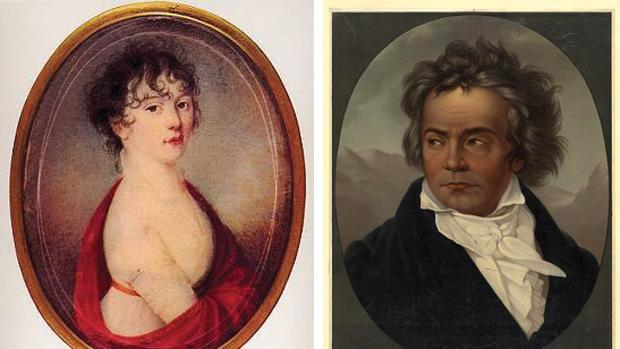

Para Elisa o también llamado Para Teresa (Therese) WoO 59 (Für Elise o Für Therese, en alemán) es una bagatela para piano solo, compuesta en la menor por el compositor alemán Ludwig van Beethoven. Es una de las obras más conocidas del compositor.123 La pieza fue publicada por primera vez en 1867 en una transcripción de Ludwig Nohl, supuestamente basada en un manuscrito autógrafo de cuya existencia no existe prueba alguna. El musicólogo y pianista Luca Chiantore ha demostrado en su monografía Beethoven al piano (Barcelona, 2010) que existen pruebas suficientes como para afirmar que Beethoven no fue quien dio la forma definitiva a esta obra, y que Ludwig Nohl se basó, en realidad, en los esbozos del conocido manuscrito 116 de la Beethoven Haus.4
La sonata para piano n.º 17 Op. 31 n.2, conocida como «La tempestad», es la 17º sonata para piano del compositor Ludwig van Beethoven y fue compuesta entre los años 1802 y 1803. Es una sonata de carácter apasionado y dramático. Hay pruebas que afirman, que esta sonata podría estar inspirada en la obra teatral "La Tempestad", de William Shakespeare, de ahí el nombre. 1
«Giulietta» es el nombre que aparece en la página de dedicatorias de las partituras de la sonata para piano n.º 14, conocida como «Claro de Luna», publicada en 1802. Pero el nombre real de la mujer a la que Beethoven dedicó una de sus piezas más inmortales era Julie Guicciardi, una condesa austríaca a la que el compositor conoció cuando era sólo una joven de dieciocho años, cuya familia quiso que aprendiese a tocar un instrumento musical. Él, que tenía treinta, fue contratado para darle clases de piano a ella y a su hermana en Viena. Y al parecer, el flechazo fue casi inmediato.
Lo primero que llama la atención de la obra es su extraño nombre. La explicación más conocida es la aportada por Max Ünger, que lo achaca a una confusión de Edwig Nohl al copiar el manuscrito de Beethoven y debido a la mala legibilidad y a la similitud en la escritura a mano de 'Elisa'y 'Theresa'. Siguiendo esta idea, la composición se denominaría 'Para Teresa', y estaría dedicada a Therese Malfatti von Rohrembach zu Dezza, una alumna de Beethoven a la que declaró su amor pero que finamente se casó años después con otro hombre. Para Luca Chiantore tras este título, que para él fue ideado por Nohl, se esconde la intención de darle «un cariz romántico a la obra», inexistente en un principio. Igualmente, no se explica cómo sigue viva la idea de que la dedicatoria era realmente para Elisa Röckel, una soprano alemana amiga de Beethoven, puesto que «es una teoría ya descalificada por completo que sin embargo se repite sin fin».
Compuesta entre 1801 y 1802, hay grandes discusiones por el nombre de la Tempestad. Lo que está claro es que este nombre no se lo dio Beethoven, sino un asociado suyo que reclamó la inspiración del maestro en la obra de Shakespeare. La pieza consta de tres movimientos en aproximadamente 25 minutos. El primer movimiento, Largo-Allegro, alterna breves momentos de tranquilidad, con pequeñas turbulencias que se expanden a tormentas. Es una forma musical inusual en las sonatas de la época. El segundo movimiento es más lento, aunque usa varios momentos de espejo con el primer movimiento. En el tercer movimiento hay un primer tránsito de emoción a clímax, con la conocida tensión del “fortísimo” final.